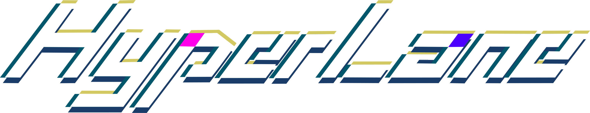

Rhythm game & chart editor

プレイする人へ。譜面をつくる人へ。
ゲーム本体とエディタを、それぞれダウンロードできます。
ダウンロード
Hyper Lane Android
Android 8.0以上 / ARM64 ・ 選曲画面上部の「＋ 曲ZIPを取り込む」から追加
Android v0.6.9 ・ 実機動作未確認
Hyper Laneへ改名しました。Windowsのスコア・設定は旧保存先から自動で引き継ぎます。Androidは新しいアプリとしてインストールされるため、曲ZIPを再度取り込んでください。旧アプリのデータは削除しません。
Large Notes / Large Hold、複数レイヤー、画面フィルター、リザルト・レート、自動更新に対応。ZIPを展開してから起動してください。譜面・音源は別途用意してください。
Android v0.6.9は明るさフィルター（−100で黒、0で通常、100で白）と「画面全体／背景のみ」の適用先に対応しました。即時変化・指定拍数後の解除・徐々に変化して到達後に維持をPC版と同じ計算で再現します。背景のみの場合は静止画・動画だけに適用し、レーン・ノーツ・UIはそのまま表示します。PC版と同じロゴのタイトル・モード選択、背景の明滅、光の粒子、ふすまの画面切り替えを追加しました。free play / Dan mode（準備中）/ Practice Modeをタップで選べます。Practice Modeは選曲後に中央レーンを表示し、上下スワイプで移動、タップまたは開始拍の数値入力で練習位置を選択、▶で8拍の余白から音源をフェードインして開始します。終了・戻る操作で拍選択へ戻り、左上のリスタートで同じ拍から再開できます。練習中はスコア・レート・リプレイを保存しません。ビルド・ロジックテスト済みです。設定「基本」にタッチ判定の高さ（0～100）を追加しました。初期値50が従来の高さで、数値を大きくすると下端固定で上に広がります。次回起動時も保存されます。譜面（.2d）と音源・画像等をまとめたZIPを端末に保存し、「＋ 曲ZIPを取り込む」で選択してください。端末へのインストール検証は行っていません。選曲中の動画プレビューは未対応です。PC版との完全一致を保証する版ではありません。
動作環境の目安
- OS
- Windows 11・64ビット版を推奨。Windows 10は対応するエディション／更新状態で利用してください。
- CPU・メモリ
- 4コア以上、メモリ8GB以上を目安に。高解像度の背景動画や大量のノーツを使う場合は余裕のある構成を推奨します。
- グラフィック
- OpenGLが動作するGPUと最新のドライバー。背景MP4にはハードウェア動画再生に対応したGPUがあると有利です。
- エディタ
- Microsoft Edge WebView2 Runtime が必要です。動画書き出しには空き容量と同梱の ffmpeg.exe も必要です。
CPU・メモリ・GPUの数値は暫定的な推奨目安であり、最低要件や一定FPSの保証ではありません。譜面の密度、MVの解像度、画面サイズで負荷が変わります。OSの対応範囲はMicrosoftの.NET案内、WebView2の要件はMicrosoftの配布案内も参照してください。
曲の入れ方
EXEの横に song フォルダ
ゲーム本体のZIPを展開したら、Hyper Lane.exe と同じ場所に song フォルダを作ります。その中に曲ごとのフォルダを置き、譜面ファイルと素材をまとめてください。
現在の選曲画面では、曲はsong 内の曲フォルダ名順に並びます。フォルダをさらに入れ子にした場合は、song からの相対パス順です。並び順を変えたいときは曲フォルダ名の先頭に番号を付けてください。
Hyper Lane/
├─ Hyper Lane.exe
└─ song/
├─ 曲A/
│ ├─ chart.2d
│ ├─ music.ogg
│ ├─ jacket.png
│ ├─ background.png
│ └─ movie.mp4
└─ 曲B/
├─ chart.2d
└─ music.mp3曲ごとのZIPを入手した場合は、ZIP自体を置かずに展開し、曲フォルダを song の中へ移動してください。曲を追加した後は、選曲画面で F5 を押すと再読み込みできます。
ファイル名の対応
譜面の .2d に書かれた名前と、実際のファイル名を一致させます。次は上の「曲A」の例です。
- SONG:music.ogg ― 楽曲音源
- JACKET:jacket.png ― ジャケット
- BACKGROUND:background.png ― 背景画像
- MOVIE:movie.mp4 ― 背景動画
ゲームは song 以下の .2d を自動検出します。通常は1曲につき1つの曲フォルダと chart.2d を用意します。カテゴリ別のフォルダを曲フォルダの上に追加しても読み込めます。背景画像・動画を使わない曲は、それらのファイルと指定を省略できます。
譜面をつくる
基本の流れ
- 01エディタを起動し、新規譜面を作成します。
- 02曲名、作曲者、難易度、音源、ジャケットを設定します。
- 03タイムラインにノーツを置き、BPMや演出を調整します。
- 04テストプレイで確認してから、譜面を保存します。
使い方・機能
まず「ゲーム」か「エディタ」を開き、その中から知りたい機能を選んでください。曲の準備と自動更新は「はじめに」にまとめています。
01はじめに・曲の準備起動、曲フォルダ、更新のしかた
起動と必要なファイル
Windows用ZIPを展開し、ゲームは Hyper Lane.exe、エディタは Hyper Lane Editor.exe を起動します。同梱ファイルと skin は元の配置のまま使ってください。エディタには Microsoft Edge WebView2 Runtime が必要です。
このページのダウンロードはWindows版です。楽曲と譜面は別途用意してください。
曲の追加・ファイル名
ゲームEXEの横に song フォルダを作り、その中に曲ごとのフォルダを置きます。chart.2d、音源、ジャケット、背景画像・動画を同じ曲フォルダへまとめてください。構成例は「曲の入れ方」にあります。
譜面の SONG / JACKET / BACKGROUND / MOVIE と実ファイル名を一致させます。曲ZIPは展開してから入れ、追加後は選曲画面で F5 を押して再読み込みします。曲は song 内のフォルダ名順、入れ子の場合は相対パス順に並びます。
ゲーム・エディタの自動更新
対応版は起動時に公開サイトのバージョンを確認し、新しい配布ZIPがあればダウンロードします。ゲームは画面右下、エディタは上書き保存ボタンの左側に進捗を表示します。
「ダウンロード完了。開き直すと更新されます。」と表示されたら、編集内容を保存してソフトを閉じ、もう一度起動してください。ダウンロード中はそのまま利用できます。
song、replay、既存のスキンやユーザー設定は保持する仕組みです。更新前には大切な譜面・素材のバックアップも残してください。
サイトの累計ダウンロード数には、自動更新によるZIP取得も含まれます。
02ゲームの使い方プレイ設定、ノーツ、リザルト、動画化
ノーツの種類・Large Notes / Large Hold
- Normal：タイミングに合わせてキーを押す通常ノーツ。
- Hold：黄色の長押しノーツ。
- Long：紫色のロングノーツ。
- Damage：ダメージノーツ。
- Guide：判定のない演出用ライン。
- Large Notes：落ち着いた緑色の幅広ノーツ。ノーツが覆うレーンのうち、どれか1つのキー入力で反応します。
- Large Hold：幅広の長押しノーツ。色と判定は通常のHoldと同じで、覆っているレーンのキーで操作します。
複数レイヤーのノーツは同じゲーム画面に重なって流れます。レーン背景は1つです。
速度・音量・表示・垂直同期
設定でノーツ速度、BGM・SE・選曲プレビューの音量、音声オフセット、キー配置、AUTO、FPS上限、垂直同期などを調整できます。背景の明るさや動画設定も変更できます。
垂直同期はゲーム画面と選曲画面に適用されます。動作の滑らかさや入力感を確認しながら、FPS上限と合わせて調整してください。
テストプレイ中は F2 でノーツ速度、F3 でAUTO、F11 で全画面表示を切り替えます。
キービーム・レーンカバー
キービームはキー入力時にレーンが光る演出です。透明度は 0～100 で、100にすると透明になります。長さは 0～100、50が従来の長さ、0で表示されなくなります。
レーンカバーはレーンの上からかぶせる半透明の紫色の板です。0ではカバーなし、50ではノーツ表示箇所から判定線までの中間、100では判定線まで覆います。覆われた範囲ではノーツを隠し、レーンは透けて見えます。
レーンカバーはプレイヤーのゲーム設定です。エディタからの譜面動画書き出しには表示せず、自分のプレイを動画化するときは表示します。
リザルトとスコアランク
曲終了後は背景をぼかしたリザルトへ移り、ジャケット、曲名、作曲者、譜面デザイナー、難易度・レベル、スコア、判定数、最大コンボ、プレイヤーレートを表示します。
| ランク | スコア |
|---|---|
| なし | 779,999 以下 |
| C | 780,000 以上 |
| B | 820,000 以上 |
| A | 860,000 以上 |
| S | 900,000 以上 |
| SS | 950,000 以上 |
| Ex | 990,000 以上 |
| Ex+ | 995,000 以上 |
| Ψ | 1,000,000 |
中央のグラフは入力タイミングの分布です。1本が20msの範囲を表し、lateは遅い入力、fastは早い入力です。赤い壁の境界は±20msを示します。
曲選択・リトライ・見返す・プレイを動画化をボタンから選べます。
スコア保存とプレイヤーレート
通常プレイの結果から譜面ごとのベストスコアを保存し、レートを計算します。AUTOとリプレイはレート更新の対象外です。譜面別レートは レベル ×（スコア ÷ 1,000,000）³。その上位10譜面の合計を10で割った値がプレイヤーレートです。10譜面未満でも10で割ります。
最高レベル30の譜面10個で理論値を達成した場合、レートの最大値は30です。譜面内容やレベルが変更された場合、以前の記録がレート対象から外れることがあります。
リプレイ・プレイ動画・スキン
リザルトの「見返す」でプレイを確認し、「プレイを動画化」で動画にできます。譜面をAUTOで書き出すエディタの機能とは別です。動画化には同梱の ffmpeg.exe と十分な空き容量が必要です。
ノーツの外観はEXE横の skin/atlas.png と skin/skin.json で変更できます。ランク画像も skin に置きます。素材を変更したらソフトを再起動してください。
03エディタの使い方基本情報、配置、レイヤー、演出、書き出し
画面構成・楽曲情報・素材の指定
左側の設定は楽曲基本情報・譜面情報・画像・ノーツ配置のトグルで開閉できます。楽曲基本情報で曲名、作曲者、譜面デザイナー、音源、オフセット、プレビュー区間を指定し、譜面情報で難易度、レベル、レーン数、BPM、拍子を設定します。
難易度は Easy / Normal / Hard / Expert / Master / SPECIAL、レベルは 0～30、レーン数は 3 / 4 / 5 / 6 / 8 / 12 に対応します。
音源、背景（静止画・動画）、ジャケットの入力欄にはファイルをドラッグ＆ドロップでき、ファイル名が自動で入ります。従来どおり手入力もできます。ジャケットは正方形を用意し、譜面を配布するときは参照する素材を曲フォルダへそろえてください。
中央はノーツと専用レーンの編集、右上はプレビュー、右側は選択中の対象の設定、下部は再生やテストプレイ・動画書き出しの操作です。
タイムライン・SNAP・ノーツ配置
マウスホイールで拍方向に移動し、右ドラッグでタイムラインを移動します。Ctrl＋ホイールで譜面の拍の表示倍率を変えられます。画面全体のブラウザ式の拡大縮小は無効です。
ノーツ配置の上部にレイヤーとSNAPがあります。SNAPは 1、2、4、6、8、12、16、24、32、48、その他。その他の初期値は64で、1以上の整数を入力できます。
種類を選んでノーツレーンを左クリックすると配置できます。長さを持つノーツやガイドは始点と終点を指定します。判定線の拍は貼り付けやテスト開始位置の基準になります。
Large Notes / Large Holdの配置
Large NotesまたはLarge Holdを選ぶと、ノーツの大きさの入力欄が現れます。2以上の整数を指定すると、その数のレーンを覆う幅になります。幅がレーンの外へはみ出す配置にも対応します。
Ctrl＋← / →で、ノーツを持つ位置を1レーンずつ移動します。初期位置は2幅なら左、3幅なら中央、4幅なら左側の中央です。端まで来るとそれ以上は移動しません。
Large Notesは緑色、Large Holdは通常のHoldと同じ黄色です。Large Holdの長さは始点と終点で指定し、テストプレイ・ゲーム本体ではHoldとして判定します。
範囲選択・コピー・種類の一括変更
Shift＋左ドラッグで範囲を囲み、ノーツやイベントを選択します。Ctrl＋Cでコピーし、移動先へ判定線を合わせてCtrl＋Vで貼り付けます。選択パネルから一括削除や設定変更ができます。
選択したノーツの種類はNormal / Hold / Damageの3種類で変更できます。SSの一括適用・解除や、選択したガイドの色・透明度変更にも対応します。
レイヤーの追加・切り替え・削除
ノーツ配置の一番上にある「レイヤー」で編集対象を選び、隣の「＋」で追加します。従来の譜面はレイヤー1です。追加数に固定の上限はなく、番号が大きいレイヤーのノーツほど手前に描画します。
レイヤーごとにノーツとBPM・BS・NS・拍子を設定できます。編集中は別レイヤーのノーツを薄く表示し、右上プレビューとゲームではすべて重ねて流します。
異なるレイヤーの同じレーン・同じ実時間にはノーツを重ねられません。画面全体に作用するFILTER、カメラ、レーン・UI表示、フィーバーはレイヤー1で設定します。
「削除」で選択中のレイヤーを削除します。ノーツ・ガイド・演出がある場合は確認が表示されます。レイヤー1は削除できません。
BPM・BS・NS・SS・拍子
各専用レーンをクリックすると、そのレーンのイベントを追加・変更します。BSレーンではBSだけ、BPMレーンではBPMだけを設定します。
- BPM：拍の速さを変更し、音源との同期に関わります。
- BS：レーン全体のスクロール倍率。0で停止、負数で逆方向になります。
- NS：ノーツの見た目の速度倍率。変化モードと変化にかける拍数を設定できます。
- SS：選んだノーツ個々の速度倍率。範囲選択後の設定パネルから0.01～1000を適用・解除します。設定したノーツには緑の縁とSS値が表示されます。
- 拍子（SIG）：4/4や6/8などの拍子を変更します。
SSは専用レーンのイベントではなく、選択したノーツに付ける設定です。
カメラ・レーン／UI表示
CAMERAの専用レーンをクリックすると、通常のカメラとCAMERA_ADVを選んで設定できます。通常は位置X/Y/Z、ADVは位置と角度X/Y/Zを指定します。変化モードと変化にかける拍数を設定でき、0拍なら即時切り替えです。
入力欄を操作していないときに← / →で専用レーンのページを切り替えます。LANEはレーン背景や線を隠してノーツを残し、UIはスコア・ジャケットなどを切り替えます。切り替えにかける拍数も設定できます。
フィルター：グリッジ・発光・モザイクなど
FILTERレーンをクリックし、グリッジ・モノクロ・走査線・色反転・発光・モザイクから選びます。強度は0～100です。
- グリッジ：画面のずれや色の変化によるノイズ。強度100では画面全体に大きく作用します。
- モノクロ：色を抑えて白黒へ変化させます。
- 走査線：画面に走査線を重ねます。
- 色反転：画面の色を反転します。
- 発光：明るい部分を柔らかくぼかし、光を周囲へにじませます。
- モザイク：画面をブロック状に粗く表示します。
瞬時に適用は指定した拍数だけ効果を適用します。徐々に変化は現在の強度から指定した目標値へ、指定拍数をかけて変化し、到達後は次のFILTER設定まで維持します。継続・変化の拍数に固定の上限はありません。
フィルターはテストプレイとMP4書き出しにも反映されます。
ガイド・フィーバー
Guideは判定のない演出ラインです。色、透明度、表示方法を調整し、よく使う色や透明度をパレットへ保存できます。選択したガイドの設定をまとめて変更することもできます。
ノーツレーンの左側にあるFEVER専用レーンをクリックして、フィーバー区間を追加・変更します。継続する拍数を指定し、ゲームで発光演出を確認してください。継続拍数に固定の上限はありません。Tabでの範囲指定は使いません。
再生・プレビュー・ノーツ速度の保存
Spaceで音源を再生・停止します。再生速度は 0.5 / 0.75 / 1.0 / 1.25 / 1.5倍から選べ、BGMとノーツSEの音量も調整できます。
右上のプレビューでは全レイヤーのノーツが重なって流れます。プレビュー用ノーツ速度は0.5～10倍で、変更した値は次回起動時にも保持されます。
表示中のノーツ数はAUTOで増える判定数に合わせています。長いノーツの始点・終点はそれぞれ数え、判定のないガイドは数えません。
テストプレイ
F1で現在の譜面をテストします。判定線の位置を基準に、開始前にノーツのない8拍の助走が入ります。複数レイヤー、Large Notes / Large Hold、演出を実際に流して確認してください。
Escで終了、Rでリトライ、F2でノーツ速度、F3でAUTO、F11で全画面表示を切り替えます。
保存・読み込み・自動復旧
左上の「譜面を開く」から .2d を読み込み、「上書き保存」から保存します。初回は保存先を選びます。既存譜面を開くと、同じ曲フォルダの SONG に指定された音源を探して読み込みます。
Ctrl＋ZのUndoは最大80操作です。クラッシュ時は自動保存データの復旧を提案することがあります。制作途中の譜面と素材は別の場所にもバックアップを残してください。
譜面動画のMP4書き出し
譜面と難易度を選び、「動画を書き出す (MP4)」から全体または開始拍～終了拍の区間を指定します。標準は1920×1080 / 60fps / MP4（H.264＋AAC）です。
フレームを生成してAUTOの譜面動画を作り、楽曲音声とノーツSEを収録します。FPS表示とレーンカバーは入りません。区間指定時は前後8拍に暗転とフェードを付けます。
同梱の ffmpeg.exe、有効な音源、十分な空き容量が必要です。動画のノーツ速度にはゲーム側の設定を使います。
04困ったとき音源・素材・表示・更新の確認
音・画像・ノーツが出ない
- 音が出ない：音量、
SONGの指定、実ファイル名と保存場所を確認します。 - 素材が表示されない：
JACKET / BACKGROUND / MOVIEの指定と実ファイルを確認します。 - ノーツが出ない：選択した難易度・レイヤー・開始位置を確認し、最新のゲームとエディタを使用してください。
- エディタが開かない：ZIPが展開済みか、同梱ファイルがそろっているか、WebView2 Runtimeが導入されているか確認します。
動画書き出し・自動更新が進まない
動画書き出しは ffmpeg.exe、音源、保存先の空き容量を確認してください。背景動画や複雑な譜面では処理に時間がかかる場合があります。
自動更新ではネット接続と空き容量を確認し、編集内容を保存してソフトを閉じた後に開き直してください。繰り返し失敗する場合は、サイトから最新ZIPを入手できます。楽曲・譜面・リプレイはバックアップしてから移してください。